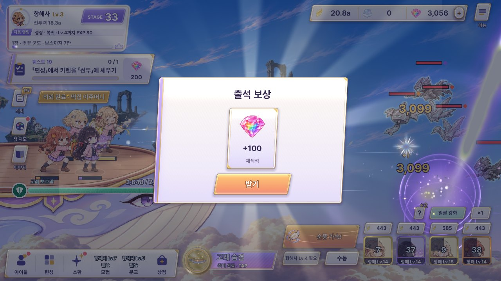
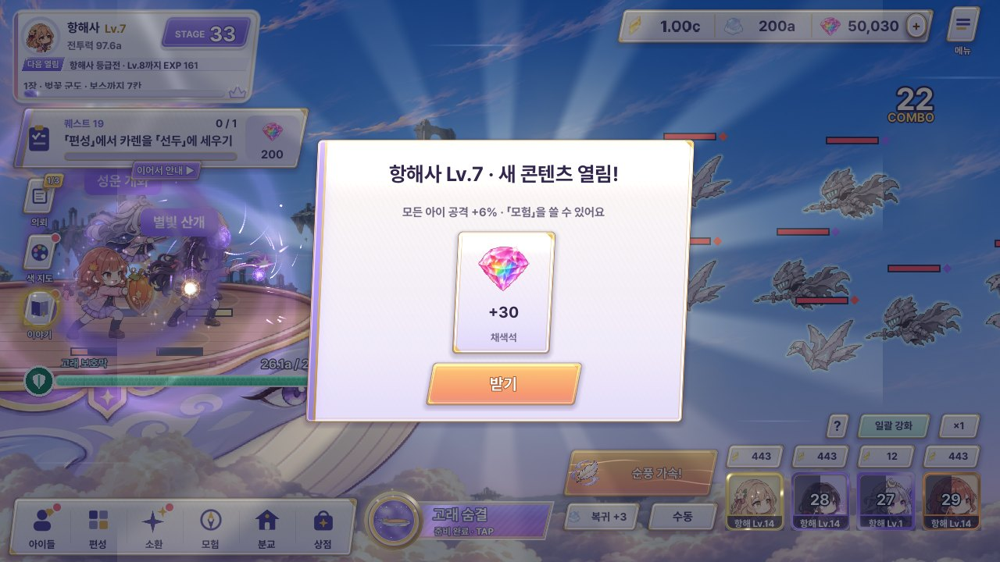
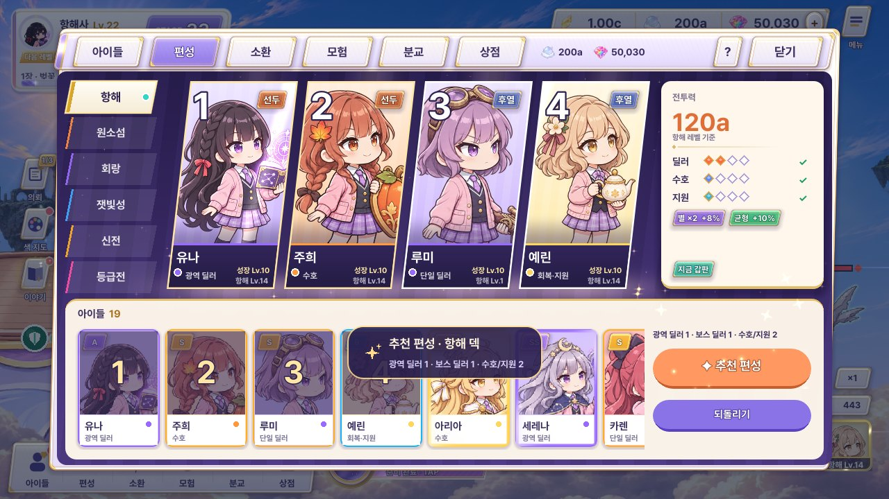
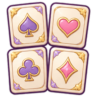

접속 · 레벨 업 알림 — 배치 2 시안 (출석 · 항해일지 · 레벨 업 · 완료 알림)
UI 목록(design/feedback70/ui_inventory.html)의 배치 2, 화면 4개(D2-1 ~ D2-4)와 「출석 → 항해일지 연달아」 흐름입니다. PD 결정에 따라 출석 · 항해일지 · 레벨 업은 따로 판을 만들지 않고, PD가 고른 보상 판 B 「수집 카드 줄」(rewards_b 수정판: 기운 남색 띠 + 카드 + 받기)을 그대로 쓰고 띠 위쪽 장식과 제목 판 색만 순간마다 바꿨습니다. 시안 A · B · C는 그 「장식」의 방향이 다릅니다. 완료 알림(D2-4)은 보상 판이 아니라 짧은 알림이라 모양부터 따로 고릅니다. 묶음마다 시안을 하나씩 누르면 고름 표시가 되고, 묶음 위 단추로 상태(1일째 · 7일째, 10분 · 8시간 등)를 바꿀 수 있습니다. 그림은 모두 게임에 있는 것이고 숫자 · 이름 조합은 예시입니다(규칙 수치 출석 100 · 월정액 90 · 레벨 업 30 · 레벨마다 공격 +1% · 방치 최대 8시간은 코드 그대로). 소리 창(D10-4)은 배치 10이라 이 페이지에 없습니다.
지금 게임
출석 · 항해일지 · 레벨 업은 제목만 다른 같은 흰 판 + 크림 칸 하나이고, 완료 알림은 잠금 안내와 같은 짙은 알약이 화면 가운데 아래쪽에 뜹니다.




1. 출석 보상 (D2-1)
하루 첫 접속에 채색석 100, 월정액이 남아 있으면 90이 더 붙습니다(코드 그대로). 지금 게임엔 「7일째 보너스」가 없어서 7일째는 칸이 다 차는 것만 보여 줍니다 — 보너스를 붙일지는 PD 결정.
A · 펼친 출석부에 도장 쾅
띠 위 오른쪽에 라벤더 표지 출석부가 펼쳐지고, 오늘 칸에 분홍 도장이 쾅 찍히며 잉크 고리가 퍼집니다. 왼쪽 쪽에는 손글씨 「N일째」. 7일째는 마지막 칸이 금빛 「개근」 도장 + 리본, 월정액은 책갈피로 남은 날을 보여 줍니다.
B · 고래가 물어 온 출석 편지
작은 구름고래가 오른쪽에서 날아와 분홍 봉투를 떨어뜨리고 지나갑니다. 봉투가 열리면 편지가 올라와 「첫날 출석, 반가워요!」, 밀랍 도장에는 오늘이 며칠째인지. 월정액이 있으면 보라 도장이 하나 더 찍히고 편지 끝에 한 줄. 날마다 편지 문구만 바뀝니다.
C · 띠 아래 금줄이 곧 출석부
장식을 더하지 않고 띠 아래 금줄에 마름모 7칸을 새겼습니다. 오늘 칸이 분홍 물감으로 피어나며 물방울이 튀고, 지나온 날만큼 금줄이 분홍으로 물듭니다. 카드가 가장 크게 보이는 조용한 안 — 매일 보는 창이라 짧게 끝납니다.
2. 항해일지 · 방치 보상 (D2-2)
자리를 비운 동안 고래가 모은 바람 조각(최대 8시간, 코드 그대로). 「빛물감」 카드는 비운 동안 색 지도 물감통에 쌓인 몫을 함께 보여 주자는 제안입니다(rewards_b · 색 지도 시안과 같은 제안). 금액은 예시.
A · 가죽 일지에 펜으로 적어 줌
띠 위에 가죽 항해 일지가 펼쳐지고 펜이 「비운 시간 · 모은 바람 조각 · 스며든 빛물감」을 한 줄씩 적어 내려갑니다. 8시간을 넘겨 비웠으면 마지막에 빨간 「가득」 도장 — 더 비워도 늘지 않는다는 걸 글 대신 도장으로.
항해 일지
비운 시간12분3시간 12분8시간최대
모은 바람 조각2.4a41.0a109a
스며든 빛물감+6+96+240
8시간가득
 +6+96+240빛물감
+6+96+240빛물감B · 점선 항로 + 8시간 시계
하늘 지도 위에 고래가 지나간 만큼만 금빛 항로가 그어지고, 오른쪽 8시간 시계가 비운 시간만큼 찹니다. 12분이면 조금, 8시간이면 항로 끝 「가득」 깃발까지. 「얼마나 더 모일 수 있었나」가 한눈에 보여 오래 비우지 않게 유도합니다.
8시간까지만 모여요
+6+96+240빛물감C · 고래가 그려 온 하늘 한 장
금 액자에 걸린 고래 그림이 잿빛에서 색으로 칠해지며 등장하고, 아래 한 줄에 항해 시간만. 비운 시간에 따라 그림 속 하늘이 바뀝니다: 12분은 한낮, 3시간은 노을, 8시간은 별밤. 숫자를 읽지 않아도 「오래 다녀왔구나」가 그림으로 전해지는 안.
+6+96+240빛물감3. 출석 → 항해일지가 연달아 뜰 때
하루 첫 접속은 보통 출석과 항해일지가 함께 옵니다(지금은 같은 판이 두 번). 장식은 위 1 · 2번에서 고른 것이 그대로 들어가고, 여기서는 두 번 받게 할지, 한 번에 받게 할지만 고릅니다. 예시: 출석 3일째 + 3시간 12분.
가 · 띠는 그대로, 「받기」마다 장 넘김
「받기」를 누르면 출석 카드가 오른쪽 위 지갑으로 날아가고, 띠는 닫히지 않은 채 제목 판이 분홍 → 하늘색으로 바뀌며 항해일지 카드가 들어옵니다. 왼쪽 아래 「① 출석 ② 항해일지」 표시로 몇 장 남았는지 압니다(10초 반복).
+96빛물감나 · 「어서 와요」 한 장에 둘 다
둘이 함께 오는 날은 판을 하나로 합쳐 출석 묶음 | 항해 묶음을 금 점선으로 나눠 한 줄에 놓고, 「받기」 한 번으로 끝냅니다. 위쪽 장식도 출석 칸 + 항로를 작게 나란히. 누르는 횟수가 가장 적은 안.
+96빛물감4. 항해사 레벨 업 · 새 콘텐츠 열림 (D2-3)
레벨마다 채색석 30 + 모든 아이 공격 +1%, 정해진 레벨에 콘텐츠가 열립니다(Lv.2 소환 · 편성, Lv.7 모험 등 코드 그대로). 「두 레벨 연속」은 지금 게임에선 판이 두 번 뜨는데, 한 장으로 합치자는 제안입니다(채색석 60).
A · 금빛 계급장 + 솟는 빛기둥
띠 위에 금빛 계급장(게임의 문장 그림)이 걸리고 새 레벨 숫자가 튀어나오며, 아래에서 빛기둥이 솟습니다. 오른 레벨 수만큼 금 갈매기 표가 쌓이고(두 레벨이면 두 줄, 숫자도 12 → 13으로 한 번 더 넘어감), 열린 콘텐츠는 자물쇠가 튕겨 나가는 카드.
 모험열림!
모험열림!
편성열림!B · 아틀리에 문이 열림
띠 위에 금 테 아치 문이 서 있고, 새 콘텐츠가 열리는 레벨이면 문짝이 활짝 열리며 빛 속에서 그 콘텐츠 아이콘이 떠오릅니다. 열 것이 없는 레벨(9 이상)은 문이 닫힌 채 틈으로 빛만 새어 나오고 문패에 레벨. 「레벨 업 = 새 방이 열림」을 가장 크게 말하는 안.
모험소환 · 편성모험열림!C · 받으면 아래 메뉴의 자물쇠가 풀림
판은 A와 같고 장식을 줄인 대신, 「받기」를 누른 뒤가 연출입니다: 열린 콘텐츠 아이콘이 아래 메뉴의 제자리로 날아가 자물쇠가 튕겨 나가고 흑백 → 색으로 바뀌며 「NEW」. 열 것이 없으면 채색석이 지갑으로 날아가고 왼쪽 위 항해사 판이 금빛으로 한 번 빛납니다. 「어디로 가면 되는지」까지 알려 주는 안(8초 반복).
 아이들모험NEW
아이들모험NEW 분교
분교 상점모험열림!
상점모험열림!
5. 완료 알림 (D2-4)
추천 편성 · 새 덱 탭 · 되돌림 · 신화 1명 제한 · 이야기 열림처럼 해낸 일 / 막힌 일을 짧게 알리는 띠. 잠금 안내(rewards 시안 #11)처럼 누른 자리 가까이 뜨고 크기(제목 18 · 설명 13)도 맞춥니다. 전투 중에는 지금처럼 위 HUD 바로 아래 가운데. 해낸 일 = 금빛 · 보라, 막힌 일 = 회색. 문구는 코드 그대로(신화 제한만 짧게 줄임).
A · 붙였다 떼는 메모지
누른 자리 옆에 마스킹 테이프로 붙인 메모가 탁 붙고, 잠시 뒤 귀퉁이부터 떼어져 날아갑니다. 해낸 일은 노란 메모 + 금별 스티커, 막힌 일은 회색 메모 + ✕. 아틀리에 벽에 붙은 메모 느낌으로, 짙은 알약과 확실히 다릅니다.
B · 붓 한 획 띠
붓이 물감 한 획을 왼쪽에서 오른쪽으로 쓱 긋고 그 위에 글이 떠오른 뒤, 물감이 마르듯 흐려지며 사라집니다. 해낸 일은 보라 → 호박색 물감 + 끝에 튄 방울, 막힌 일은 먹빛 회색 한 획. 「색을 칠하는 게임」 정체성에 가장 가까운 안.
C · 유나가 한 줄로 알려 줌
둥근 테 안의 유나 얼굴이 톡 튀어나오고 옆으로 말풍선이 펼쳐집니다. 해낸 일은 흰 풍선 + 반짝이, 막힌 일은 회색 풍선 + 땀방울. 안내 캐릭터가 말해 주는 느낌이라 가이드 · 퀘스트 말풍선과 한 식구가 됩니다(얼굴은 게임의 유나 SD를 잘라 씀).